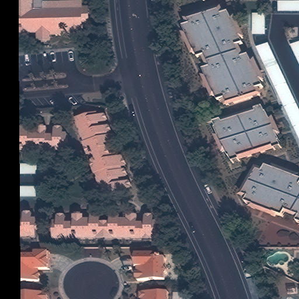
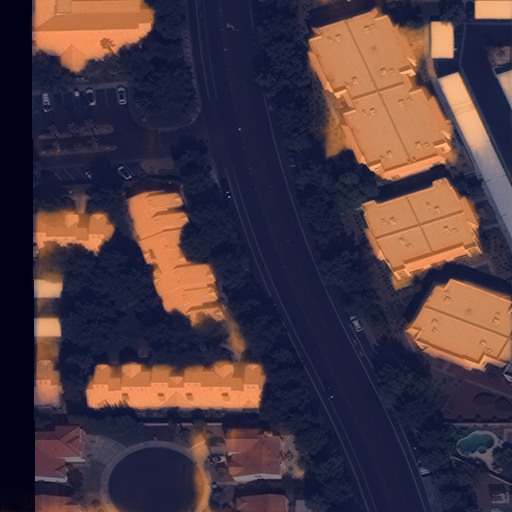
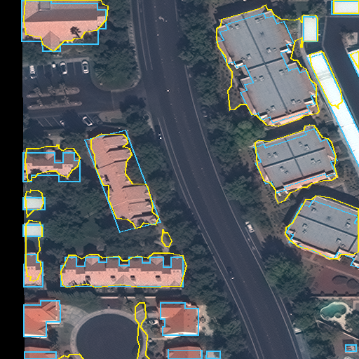

AI-Assisted Building Footprint Extraction and Cadastral Quality Assessment. Un motor Python reutilizable que detecta cubiertas candidatas en ortofotos de alta resolución, las vectoriza con georreferenciación válida y las compara con geometría catastral para priorizar revisión humana.
Repositorio en GitHub Probar la demo en Streamlit Modelo ONNX (Release)Estado: la demo de Streamlit hace inferencia real en CPU sobre una imagen pequeña (puede tardar al iniciar si la app estaba dormida). El modelo ONNX está en una Release de GitHub; no está publicado en Hugging Face. Este sitio es estático y no ejecuta inferencia: los resultados mostrados fueron generados por el código del repositorio.
El Distrito Metropolitano de Quito crece de forma continua, y mantener actualizada la información catastral de construcciones requiere contrastarla con imágenes aéreas recientes. Detectar manualmente techos en ortofotos de alta resolución es lento. Este proyecto automatiza una primera pasada: candidatos de cubiertas y su correspondencia con geometrías catastrales.
GeoTIFF georreferenciado; validación de bandas, CRS, resolución y NoData.
Teselas con solape, remuestreo al GSD objetivo, PyTorch u ONNX Runtime en CPU/CUDA.
Umbral, limpieza, polígonos válidos, área mínima en m², deduplicación, georreferencia preservada.
IoU, cobertura, diferencia de área; clases: fuerte, parcial, sin referencia, ambigua, no evaluada.
GeoJSON, GeoPackage, máscaras GeoTIFF, informes JSON/Markdown con procedencia.
El borde punteado indica que GitHub Pages no ejecuta Python: solo muestra resultados generados antes por el motor.
XD_XD · SpaceNet-4 · U-Net con encoder VGG16 (29,3 M de parámetros, 117 MB). Modelo real de segmentación de edificios en RGB, entrenado con imágenes WorldView-2 (~0,5 m) de Atlanta. Se descarga desde la fuente original (AWS Open Data) con verificación SHA-256; no se afirma autoría ni propiedad. Se validó la exportación a ONNX: diferencia máxima de probabilidad 3,2·10⁻⁸ y 100 % de concordancia de máscara; 1,4 s por tesela de 512² con ONNX frente a 2,2 s con PyTorch (4 núcleos).
No se entrenó ni ajustó ningún modelo con datos de Quito. Existe un flujo de fine-tuning documentado para etiquetas futuras, sin ejecutar.
Recorte de 512×512 px de SpaceNet-2 (Las Vegas, CC BY-SA 4.0). No es Quito: no se pudo obtener ni redistribuir una muestra de Quito (ver fuentes).



| Medida (IoU ≥ 0,5) | Valor |
|---|---|
| Cargando… | |
n = 20 edificios en un solo recorte: ilustra el funcionamiento del flujo; no valida la exactitud en Quito. Demo en Streamlit Cloud con esta misma imagen: 20 candidatos en 2,2 s de CPU, memoria pico 829 MB (una sola ejecución). Prueba de escala: mosaico sintético de 3072² px (49 teselas) en 90 s con ~780 MB de RAM pico en CPU.
Solo frente a etiquetas de techos revisadas de forma independiente.
Coincidencia many-to-many por componentes conexas; umbrales de demostración, no tolerancias oficiales.
Validez, vacíos, solapes, CRS declarado. Organizado según ISO 19157-1:2023 (sin certificación ni conformidad oficial).
git clone https://github.com/faustoaguanor/quito-building-intelligence-lab.git cd quito-building-intelligence-lab python3 -m venv .venv && source .venv/bin/activate pip install torch --index-url https://download.pytorch.org/whl/cpu # o build CUDA acorde a su driver pip install -e ".[gis,torch,onnx,export,app,dev]" qbl download-model && qbl export-onnx qbl run ortofoto.tif --out salidas/run1 --reference construcciones.gpkg --device auto